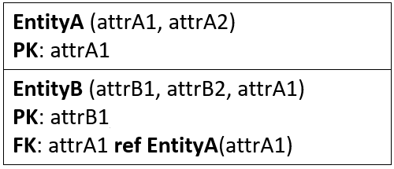

- 1 Overview
- 2 Strong entities
- 3 Weak entities
- 4 One to many relationships
- 5 One to one relationships
- 6 1..1 to 1..1 relationships
- 7 1..1 to 0..1 relationships
- 8 0..1 to 0..1 relationships
- 9 Recursive relationships
- 10 Inheritance
- 11 Aggregation & Composition
- 12 Many to many
- 13 Complex relationships
- 14 Multivalued attributes
- 15 GRD
Introduction
The following guide will explain how to map from the EER conceptual model to the logical model, i.e. a relational schema and a Global Relations Diagram.
The intention is that you can just go through the steps in order, though based on your specific case, you may have to go back and redo some steps.
Strong Entities
An entity is considered strong if it can exist without depending on other entities.
The following is an arbitrary entity:

attr_a_1 is primary key.
attr_a_2 is a simple attribute.
attr_a_3 is marked as alternate key (or candidate key), to indicate it is unique. It could be an email or phone number.
attr_a_4 is multivalued.
attr_a_5 is a composite attribute.
attr_a_6 is a derived attribute.
When mapping to a relation, keys, and simple attributes are included. Composite attributes are "flattened", i.e. we get a simple attribute per attribute in the composite.
Multivalued attributes are handled in a later step, i.e. left out for now. This is because the relational database handles multivalued attributes in a special way. Remember that each cell in a table should contain a single value.
Derived attributes are also included, and marked as derived.
The resulting relation looks like this:

If no Primary Key was marked on the entity, you may introduce a new surrogate key. This is just a new attribute, you create. These are often just: movie_id, person_id, department_id, etc.
For the derived attribute, you might explain the calculation in the parenthesis, e.g.
- Derived: age ( currentDate() - date_of_birth )
- Derived: movie_rating ( average of all ratings)
Weak Entities
Weak entities are the kind, which cannot have an instance without referencing another entity instance. Examples:
- A Profile cannot exist without a User
- A Ticket cannot exist without Customer and Concert
- A Room cannot exist without a Building
- A Playlist cannot exist without a User
Weak entities are mapped similar to strong entities. They will at a later point include one or more foreign keys. This is done when mapping relationships.
A weak entity results in a relation.
- Include all simple attributes
- Composite attributes are broken into simple attributes
- The primary key is partially or fully derived from the owner entity. This means we cannot define the primary key until after all relationships are mapped.
- Multivalues are left out for now
- Derived attributes are included and explained, as in the previous step
Example
In the above entity, attr1 is marked as PPK, to indicate this attribute is part of the Primary Key (partial primary key), but is not enough in itself.
As it is a weak entity, we (usually) need to include one or more foreign keys in a composite primary key.
This is done in a later step, when the relationship is mapped.
The resulting (currently unfinished) relation:

The primary key is unfinished, so currently we have included a temporary placeholder: ?.
Often, weak entities are implied by them having a relationship to the "owner entity" with 1..1 on the owner side. This implies the weak entity must reference the strong entity.
Note
In theory the primary key of a weak entity will be a composite key, which will include the FK(s) that points to the owner(s)'s PK.
You may have a project with a name, run by a department, which has PK: dep_id.
The project name itself may not be unique, but combined with the dep_id it can be a key, as a department will not create to projects with the same name.
Sometimes this results in large composite keys (i.e. containing many attributes), and it may be better to introduce a surrogate key.
One to Many, 1:*
For each binary (i.e. only including two entities) 1:* relationship we map it as follows.
We define the 1-side to be the "parent", and the *-side to be the "child".
Post the primary key attribute(s) of the parent-relation into the child-relation as foreign key.
Relationship attributes are posted into the child-relation.
It is not important if it is 0..1 or 1..1.
It is not important if it is 1..* or 0..*.
The mapping approach is the same.
The child-entity (EntityB) received a {PK} or {PPK} in previous steps.
If the parent side has 1..1, it indicates the child-entity is weak, and the {PK} of the parent will be included in the composite primary key of the child.
If the child-entity is weak, the {PK} is unfinished, and the {PK} of the parent is included in the composite primary key of the child.
Example 1
Given the below simple EER diagram, the child is a strong entity:

We get the following two relations:

Example 2
Given another simple EER diagram, the child-entity is weak, and attrB1 is marked as {PPK} (or not present at all), i.e. the primary key is unfinished.

The result is (EntityA is same as above):

The primary key of EntityA is included in the composite primary key of EntityB
One to one, 1:1
There are three variations of this kind of relationship, and they are dealt with differently.
They are split up across the next three slides.
1..1 to 1..1
This is mandatory on both sides. The entities could look like this:
Combine the two entities into one relation.
Pick one of the primary keys as the primary key of the relation.
The other can probably be marked as an Alternate Key.
Any relationship attributes are also included in the relation.
The result:

1..1 to 0..1
This means mandatory on one side, and optional on the other.
We define the mandatory side as parent (1..1 side), and the optional as child (0..1 side).
The result will be a relation per entity.
We post the {PK} of the parent into the child.
Example:
Here, EntityA is parent, and EntityB is child.
And the resulting relations:
0..1 to 0..1
Optional on both sides.
It is mapped the same way as 1..1 : 0..1, however it is not clear which entity is parent, and which is child.
Based on knowledge about the domain, you will have to assign parent and child.
The goal is to minimize the number of cells containing null.
Assume the following entities:

If EntityA most of the time has an EntityB, and EntityB only sometimes has an EntityA, then we say EntityA is the child, and will contain the foreign key.
EntityA will then most of the time have a non-null value in the cell for the foreign key.
If it is the other way around, then the foreign key goes into EntityB.
You will have to make the choice.
If it's even how often the foreign key will be null, you make a choice.
Example
This diagram indicates that a member of Staff may lead 1 Department, and a Department may sometimes be lead by a member of the Staff. But for whatever reason, in very rare occasions a Department is leader-less.
In this case, we would define Department to be the child, and Staff to be parent: The Department relation will get a foreign key to Staff.
Recursive Relationships
The rules are similar to those the 1:1 binary relationships just described previously.
1..1 : 1..1
Create a copy of PK in the relation. It is an FK pointing to a PK of another occurrence (instance) in the same relation.
If the recursive relationship has any attributes, those are included in the relation as well.
Result:

Note
You will probably never implement this, as it gives a chicken-egg situation:
- You cannot insert a row, with an empty FK, as the FK must point to something; it is mandatory
- The first row inserted cannot reference anything, as no other row exists
So, these are mainly theoretical.
0..1 : 1..1
An EntityA occurrence may or may not reference another occurrence of EntityA.

I'm not sure, I have a good, concrete example for this type, so they are probably also rare.
The result is the same as above, we introduce a foreign key to point to the primary key
Again, relationship attributes goes into the relation.
Note
When dealing with 0..1 : 1..1 you may also use the solution for 0..1 : 0..1, if you prefer, see below.
This depends on how many null-values you end up with, if you go for the above approach. Too many nulls, and you should consider using the below described pairing-relation.
0..1 : 0..1
Optional on both sides:

Example: A student may tutor another student, maximum one tutee. A student may be tutored by another student, maximum one tutor.
Solution: Create a new relation to track pairs. Relationship attributes go into this new relation.

1:*
You may choose either of the previous two approaches:
- Create new foreign key attribute in the Entity
- Create new paring table
Again, consider the number of null-cells.
*:*
This must be mapped with a new relation to track pairs. I.e. same approach as 0..1 : 0..1.
Inheritance
There are 4 versions when dealing with inheritance.
Which to pick is determined by the inheritance-constraints (participation and disjoint), as there are four combinations:
- {mandatory, and}
- {mandatory, or}
- {optional, and}
- {optional, or}
Each combination above has a recommended approach to mapping.
However, sometimes you may have good reason to use an approach other than the recommended.
{mandatory, and}
It could look like this.

You create a single relation to cover the super- and sub-entities.
You add attributes to indicate whether a row is SubA or SubB or SubAB, this attribute is called a discriminator.
Usually the sub-types do not define primary keys, and so the primary key is commonly just the BaseEntity's primary key.
Other Primary Keys (if present) are marked as Alternate Keys .
You can either add a boolean attribute for each sub-entity in the relation, to say whether the row is A, B, AB, or something else.
Or you can just add a single attribute, which can indicate which combination of sub-entities are used.
The result is either of the below:

If there are many sub-entity-types, a single attribute discriminator may be easier to deal with.
{mandatory, or}

In this case, it doesn't make sense to combine the Sub-types, because the disjoint constraint is "or". It would lead to many null values. Or if you're not careful, then a row can represent two sub-entities, which should not be allowed according to the constraints.
The solution is to create many relations: one per combination of Base-SubType. I.e. you will get a number of relations equal to the number of sub-types.
From the above example, we would get two relations: Base-SubA, and Base-SubB.
Result:

Naming of the relations is up to you, "BaseA" is perhaps not a fantastic name.
{optional, and}

Here, we make two relations:
- one for the super-entity
- one to combine all sub-entities, with discriminator attribute(s) to distinguish the type of each row.
The primary key of the relation for the sub-entities will be the same as the primary key of the base-relation, acting as foreign key as well.
The result:

Here the subType attribute tells which type of combination of A, B, or AB it is. Similar to the case for {mandatory, and}.
Alternatively a number of boolean attributes could be used.
{optional, or}

This is handled with a relation per entity: Base, SubA, and SubB.
The primary keys of sub-relations (if non are present) will be a copy of the primary key attribute(s) of the super-relation.
The sub-relation will then reference the super-relation.
Result:

Complex
Sometimes, your inheritance hierarchy may span multiple levels, e.g.:
In this case, it may be easiest to resolve it from the bottom-up.
Sometimes, a super-entity is involved in multiple inheritances, which may really complicate things. You'll just have to use your best judgement.

Aggregation & Composition
These are handled like normal relationships.

*:* Relationships

You should alread have relations for EntityA and EntityB.
You need a new relation to track each pair of EntityA-EntityB. This relation will also contain any relationship attributes.
We call this a "join-relation", or "join-table". Or sometimes "relationship-relation", but that sounds silly.
The primary key of each relation will be posted into the join-relation, and act as foreign keys, each pointing back to a relation.
The join-relation's primary key will be the combination of the two foreign keys.
Result:
Complex Relationships
These are mapped similar to the *:* relationship: We use a join-relation.
Consider the following EER:

Here we have three entities involved in a relationship, and also with relationship attributes.
The multiplicity is irrelevant when dealing with complex relationships, the result is the same.
Again, you should already have relations for the three: EntityA, EntityB, EntityC.
We create a join-relation for the relationship. It includes the three primary keys of A, B, and C.
The primary key of the join-relation is the composite key made up of the three.
Relationship attributes are included in the join-relation.
Result:

Multivalued Attributes
These were mentioned on the second slide, about strong entities. Now we need to deal with them.
Most relational databases do have some kind of attribute type, which can hold multiple values, e.g. in an array. But this approach is not good for queries, and harder to update.
Instead, a new relation is created to keep each value and a reference to the entity occurrence.
Example:

We already have a relation for EntityA.
We need a new for the multivalued values.
The result:

Another more concrete example

Will result in two relations:
You might then have two tables with data, like so:

Each value in the multivalued attribute becomes a row in the value-table. Because of the composite primary key, each value (genre) can only appear once per entity (book).
Global Relations Diagram
Once the relational schema is created, you can convert it into a Global Relations Diagram.
Such a diagram is often better for understanding the structure of the database.
It looks very similar to the EER diagram, but now it just presents the information from the relational schema.
The GRD includes:
- Entities/relations
- relationships, marked with multiplicities on both ends, an arrow pointing to the referenced table, and a name
- Primary keys
- Foreign keys
- Alternate keys
We no longer have:
- Relationship attributes
- *:* relationships
- Multivalued attributes
- Composite attributes
- Inheritance
- Aggregation
- Composition
Below is an example. First the EER diagram:
Following the steps for mapping, we arrive at the following relational schema:
This relational schema can then be expressed as a Global Relations Diagram:

There are a few tricks for readability:
- All relationship reading directions points in the direction of the foreign key. E.g. Dependent references Employee, so the arrow points from Dependent to Employee.
- The relationship arrows are anchored at specific attributes, instead of the box for the Entity. This also helps to indicate which foreign key points to which primary key.
Draw.IO can handle the attribute anchoring decently. Astah cannot, that's more tedious to work with.